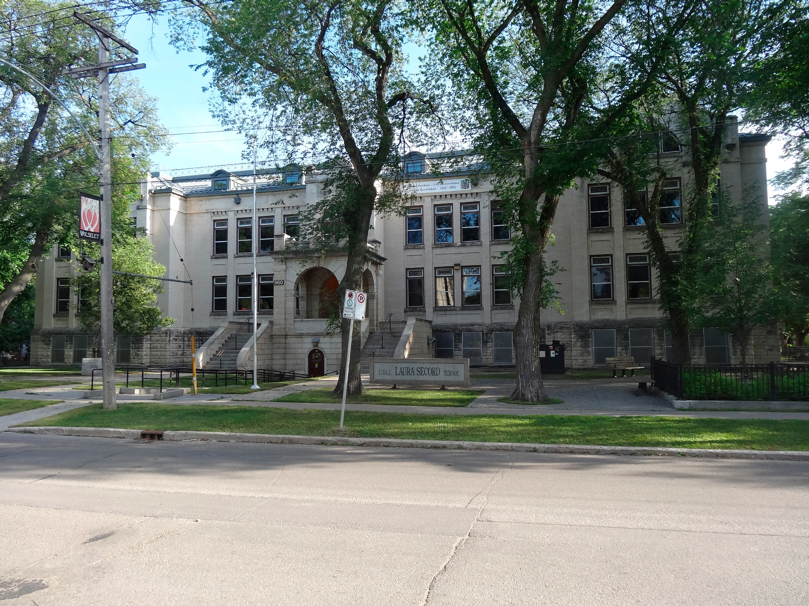

-1-MasterItem.svg)
Stories of Westminster United Church & its People / Page
17
At only 14, he joined the Canadian Militia as a bugler and six years later, in
1870, was promoted
to the rank of Corporal. His first assignment was to guard the Welland Canal at
Carlton, Ontario
against the Fenian Raids (1866-70). While ultimately no attack in this
insurrection was made against
the post where he stationed, his early military career was eventful in other
ways. In the militia, he
met Colonel George A. French, just as the colonel was preparing to head the
newly established North
West Mounted Police (NWMP). At 21, James enlisted in that force, with the rank
of Staff Constable,
and remained there until 1877.
While, for the majority of us, the most involved role we play in relation to
history is of bystander,
for a moment during his time with the NWMP James transcended this station — although only,
as it were, by serving as a witness: James was present at the Fort Carleton
negotiations between
the Crown, represented by Lieutenant Governor Alexander Morris, and the Wood and
Plain Cree
Indians, and his name is among those witnesses whose signature authenticated the
fateful treaty
resulting from these negotiations. When he returned in 1878 to civilian life,
still only in his mid-20s,
it was to Winnipeg. Young though the city was, it was by then the fastest
growing settlement west
of Ontario, so there was strong demand for able-bodied men in construction jobs.
James settled
in the Point Douglas area to work as a carpenter. For all his early adventures,
the circumstances
of his formative years were thus humbler, socially speaking, than many of his
fellow founders
of Westminster. At any rate, it was as a carpenter that James developed some of
the practical skills
crucial to his later, more distinguished career as an architect. His election to
the Winnipeg School
Board effectively ended his carpentry days, and offered a springboard for his
promotion a few years
later to Architect & Commissioner of School Buildings, a post he held for the next thirty-six years.
The first schools he designed were all three-story structures, whose
Victorian influence is obvious; similarly styled schools constructed in
that era can be found all over England. This is also true of t
he two-story schools he later designed. Sadly, many of these buildings
have been torn down for one reason or another, but those that remain
— La Vérandrye on Lilac Street, Earl Grey on Cockburn, and Laura
Secord School (pictured) on Wolseley, among them — are pleasing relics
that add character and a dash, but not more than a dash, of grandeur
to their surrounding neighbourhoods.
Our Founders
